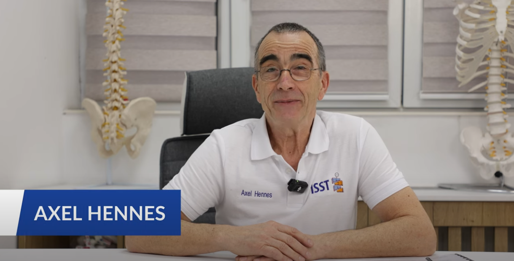

ISST 是由德国 Asklepios 体系传承的国际认证课程，以「矫正呼吸 + 三维姿势纠正 + 身体分块」为核心，为康复治疗师提供系统、循证、可落地的脊柱侧弯保守治疗技术。健衡学园与德国 ISST 官方合作，把原版认证课程带到中国。
围绕脊柱侧弯的评估、治疗与人才培养，构建完整体系。
以运动治疗为核心的脊柱侧弯非手术方案：矫正呼吸、三维姿势纠正、分型评估与个体化训练，为患者提供保守治疗选项，临床决策请遵医嘱。
ISST 国际认证课程体系：Part I 基础课程、Part II 进阶认证、Refresher 复训与医生课程，标准化、国际化、小班实操，全中文授课。
倡导医生、物理治疗师、矫形支具师与家庭协作的团队模式，将 ISST 三维疗法融入日常康复流程，建立以患者为中心的长期管理路径。
从基础到认证，从治疗师到医生，完整学习路径。
完整认证需要约 4–9 个月，理论学习与临床实践交替进行，确保学得会、用得上。
系统学习脊柱侧弯评估、分型、矫正呼吸与三维矫正基础，掌握 ISST 方法的核心要素。课程结束参加笔试。
为 2 位不同患者完成案例文档：检查方案、体位图、站立/坐位矫正记录与治疗计划，同时研读 SOSORT 2011 指南。
深入 ISST 教学法，现场呈现并讨论案例报告。通过考核后获得 ISST 国际认证。
通过 Refresher 复训保持技术熟练度、交流真实案例、跟进体系更新，在健衡学员生态中持续成长。
德国 ISST 官方体系认证讲师领衔，全中文授课，中德双重视角。

🇩🇪ISST 施罗斯研究所主席、高级施罗斯讲师，2015 年与 Sanomed 合作创立 ISST 培训学院。自 2008 年起在全球 20 多个国家主持 ISST 国际认证课程，是 ISST 体系教育与推广的核心人物。
美国资深物理治疗师（PT）、物理治疗学博士（DPT），超过 30 年骨科及脊柱侧弯物理治疗经验。Schroth 北美地区早期认证培训导师之一，北美脊柱侧弯诊所 Spineline Rehab Inc 院长，SOSORT 学术委员会成员，全球培训超过 100 名 Schroth 物理治疗师。
高级物理治疗师，香港大学博士。中国 Schroth 国际持牌培训导师，SOSORT 委员（中方），SRS 活跃成员。大湾区康复医学会物理治疗专业委员会会长。五年内发表 SCI 论文 15 篇，获 APOA 最佳论文奖，脊柱侧弯相关专利三项。
德国 Schroth（ISST）脊柱侧凸三维矫正治疗师。中华康复治疗师协会脊柱侧弯与体态康复专委会常委，云南省体医融合脊柱侧弯与体态康复专委会副主任委员，云南省康复医学会物理治疗委员会常委兼秘书；曾赴美国 Creighton 大学、澳洲 ACU 大学、香港理工大学进修。
讲师阵容以每期课程实际安排为准，健衡学园将根据 ISST 官方授权与学员需求灵活调配。